Home |
University Girl |
Designs by Shay |
About |
Contact
University Girl
Since becoming a student at Syracuse University, I have been able to find a creative outlet and make my ideas a reality with
University Girl Magazine .
Here is the link to the newest edition where I served as Editor-In-Chief:
UGIRL: Muse Edition
As Creative Director of the shoots below, my responsibilities included:
Conceptualized and supervised the execution of photoshoots for the print magazine and digital platforms.
Strategically curated and maintained the brand identity and visual direction of University Girl Syracuse across print and digital platforms.
Oversaw 30+ executive members across creative teams including Photography, Videography, Production, Graphic Design, Styling, Beauty, and Casting.
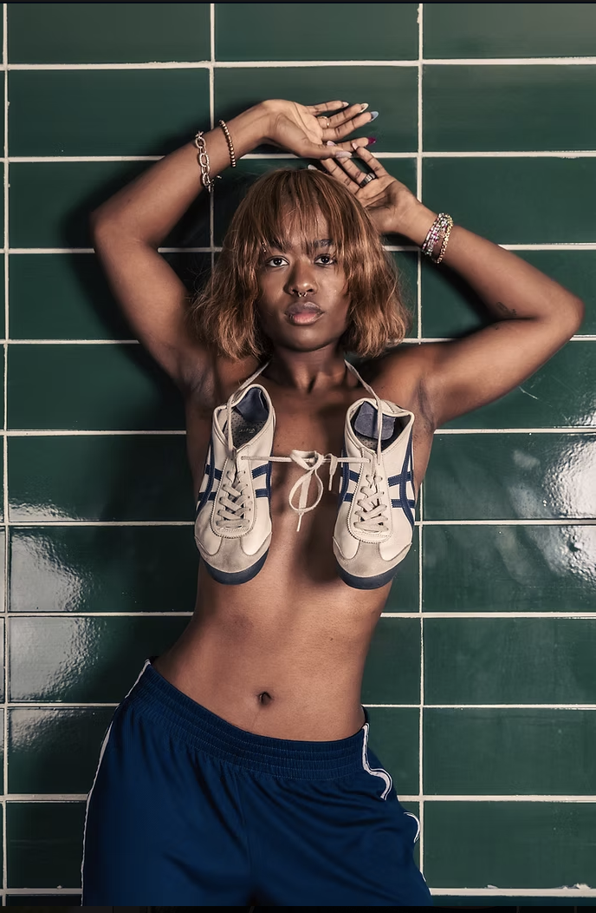
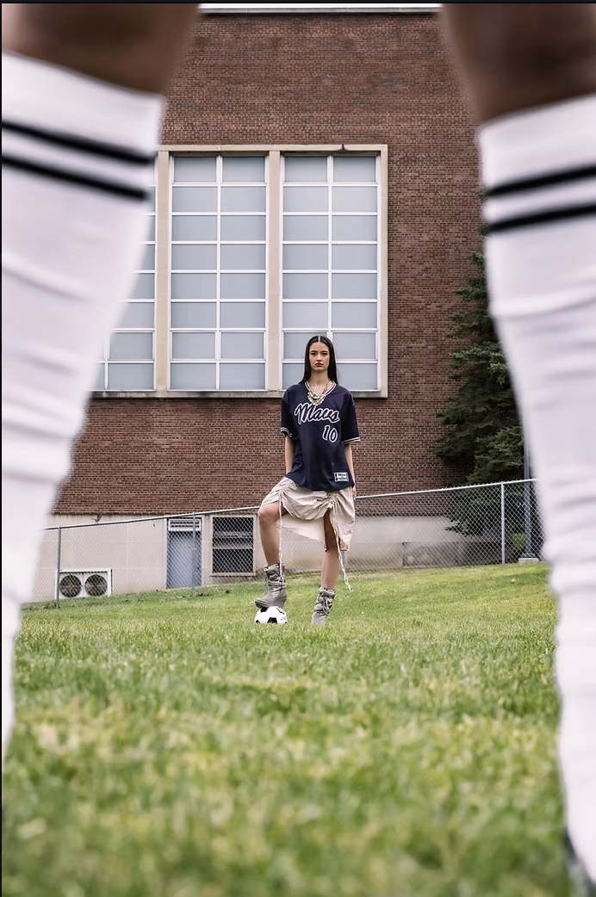
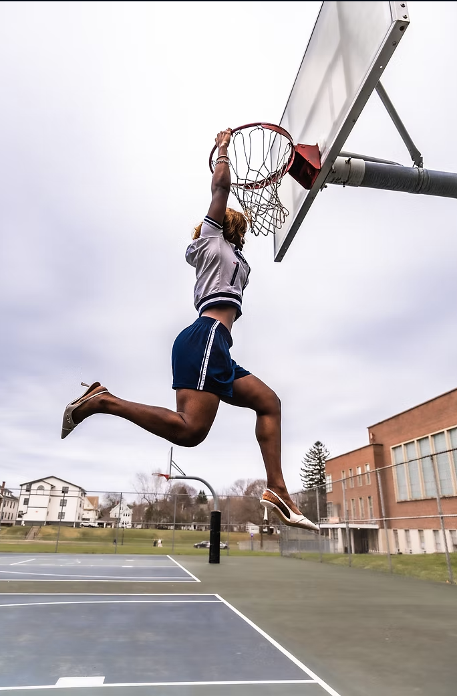
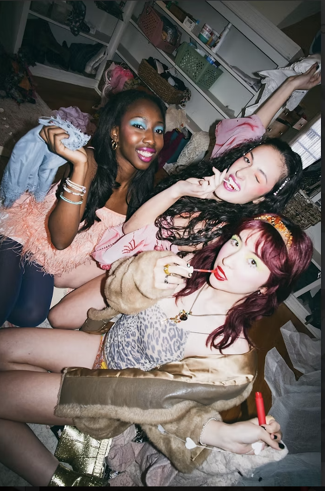
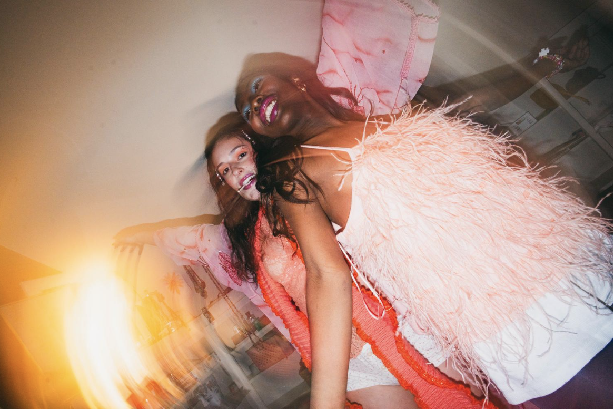
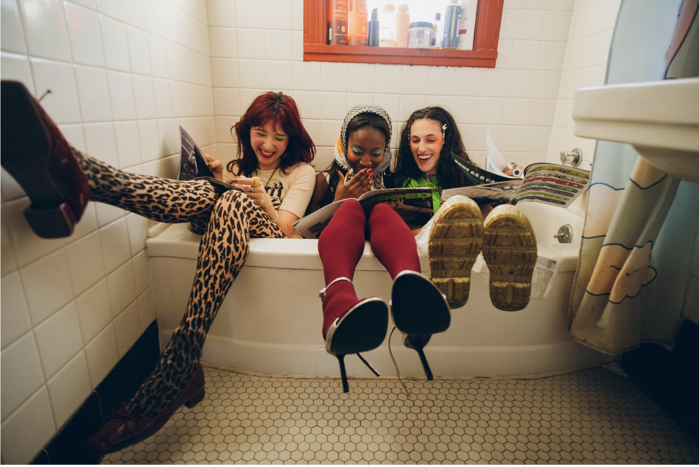
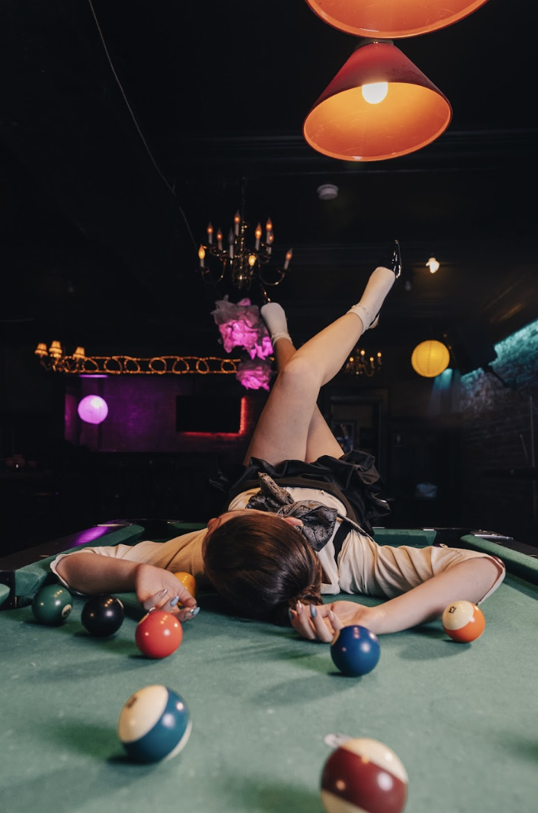
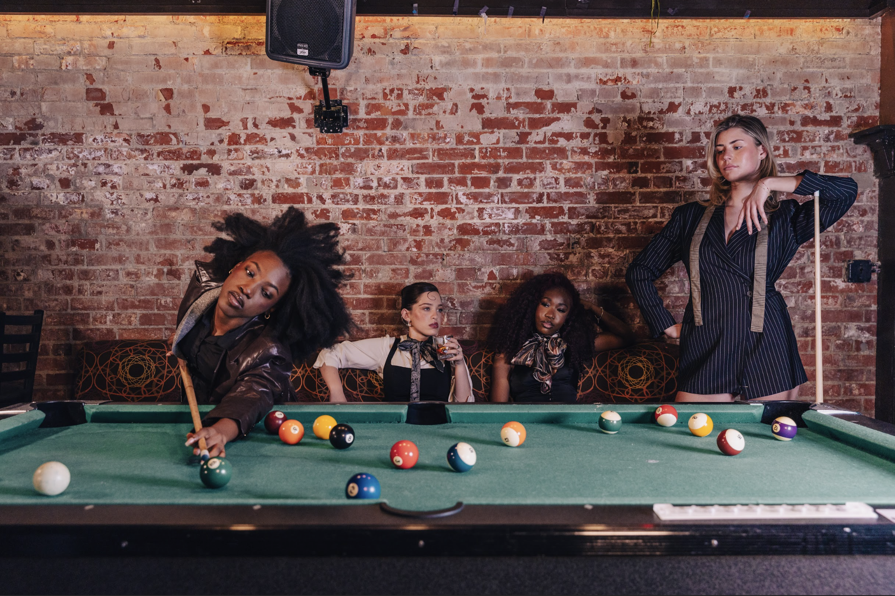
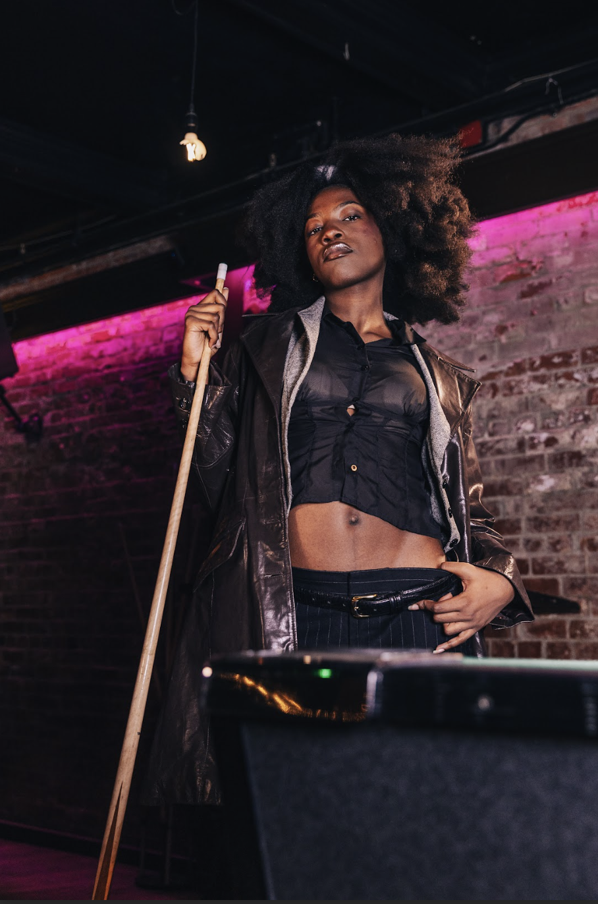
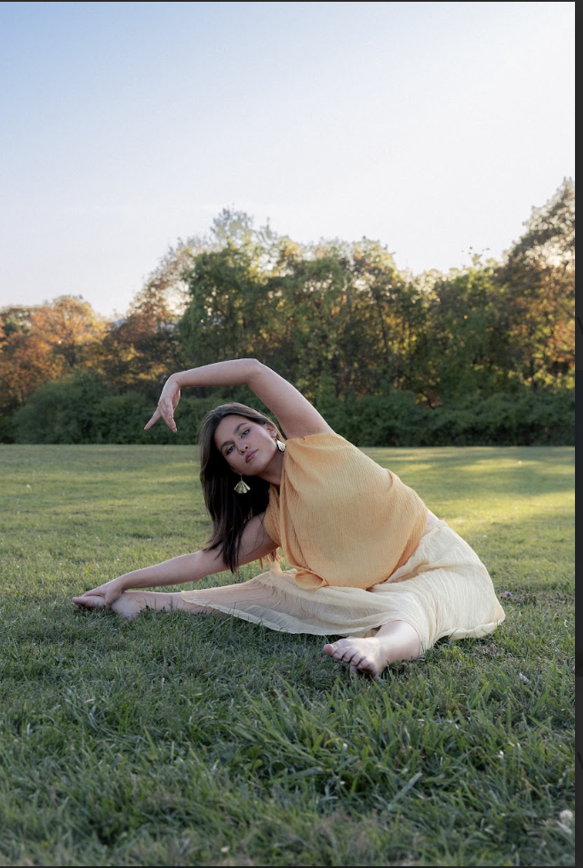
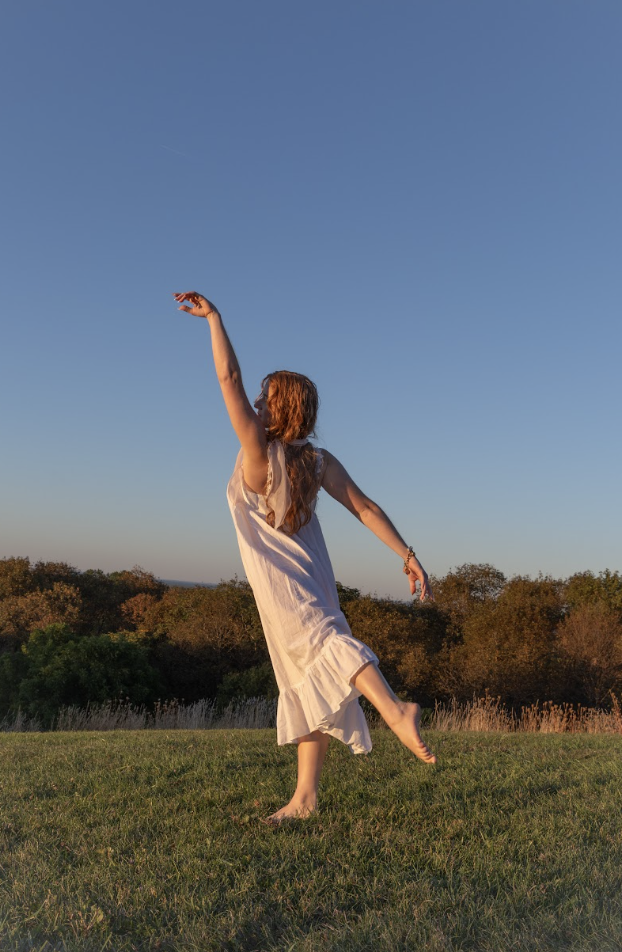
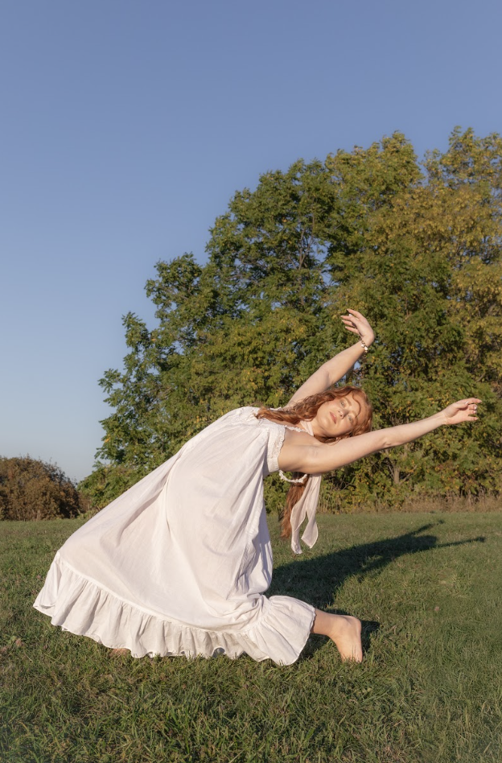
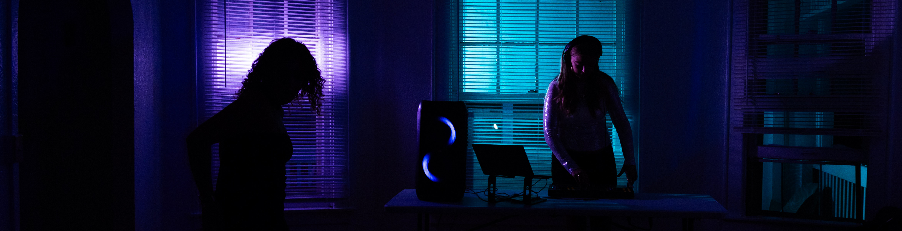
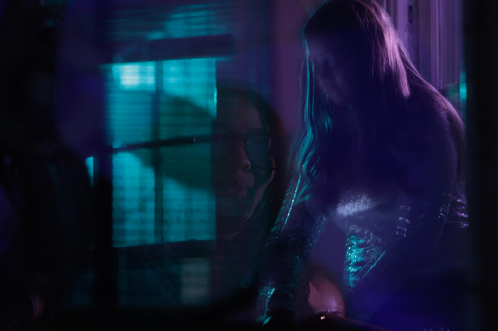
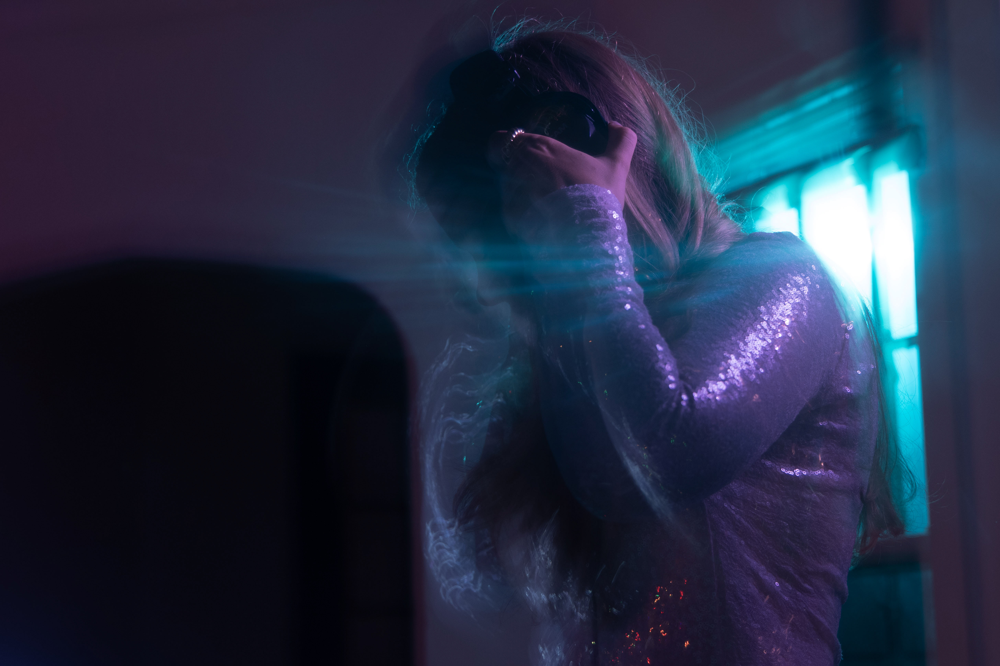